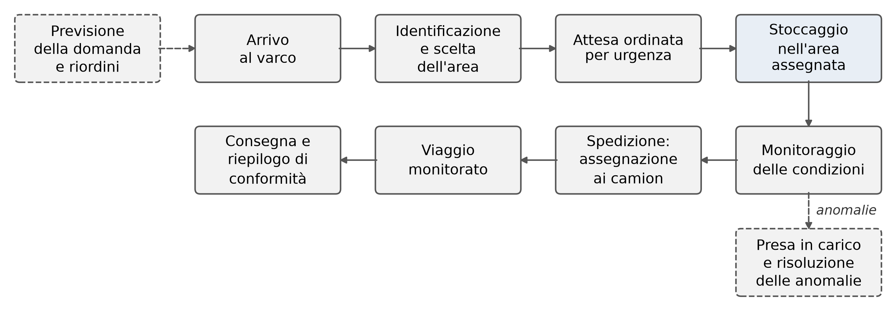
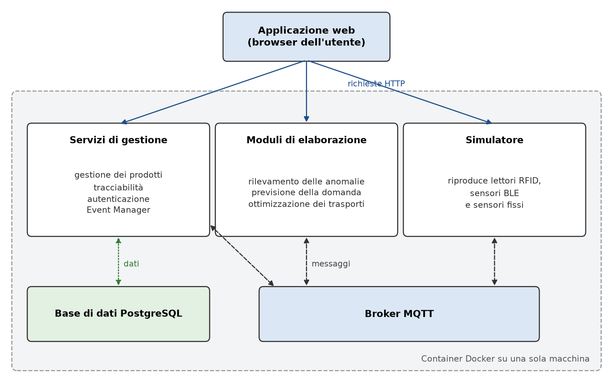
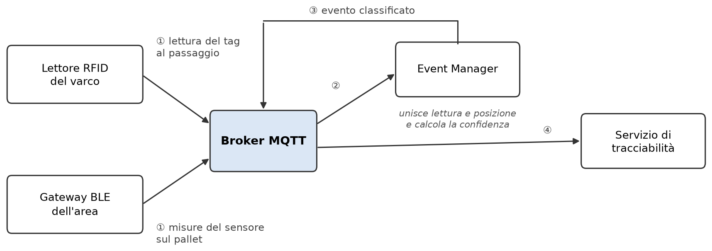
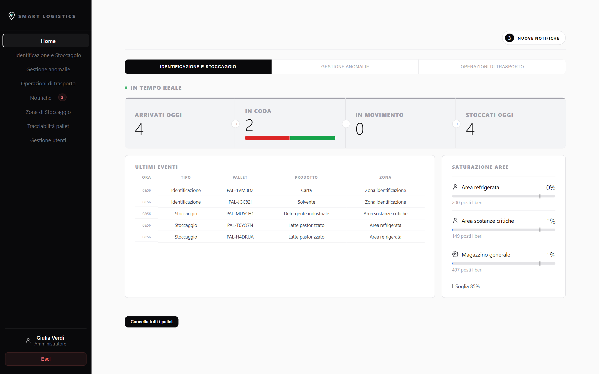
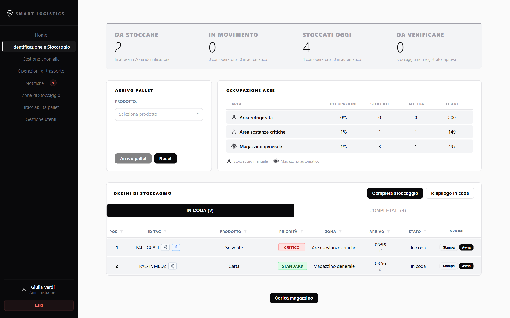
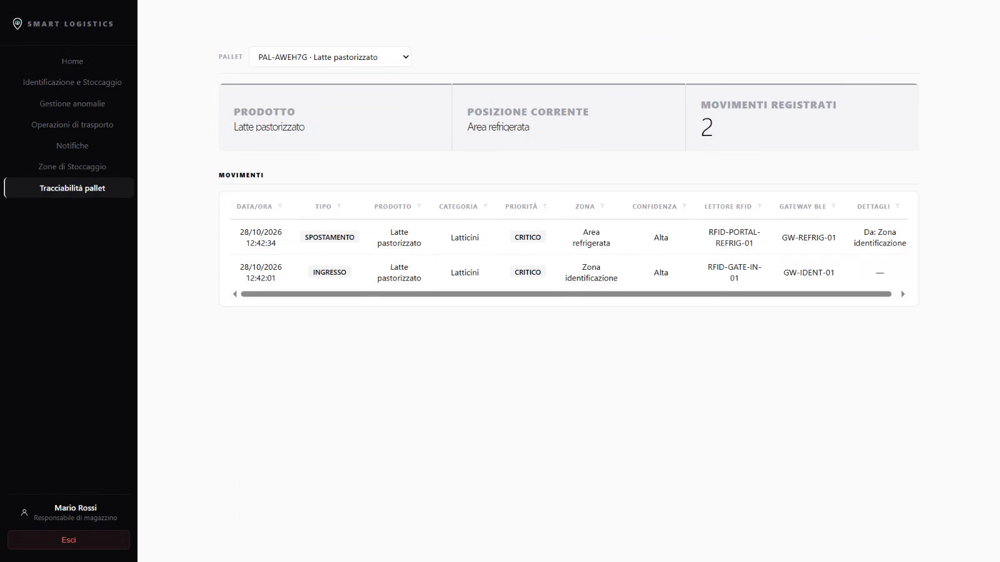
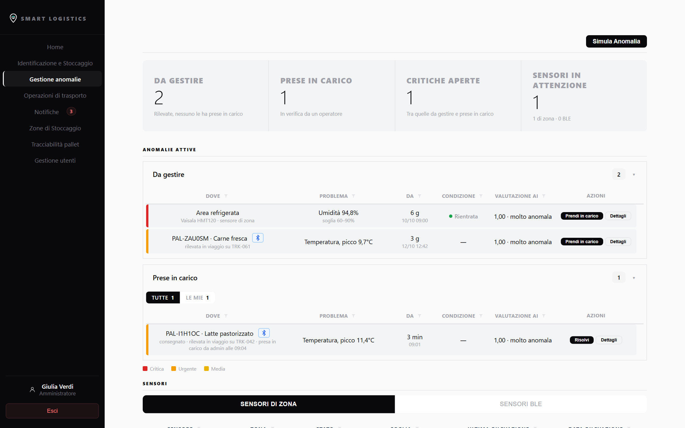
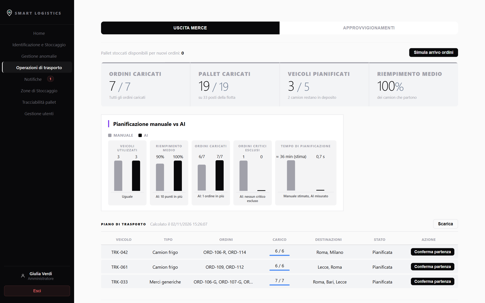
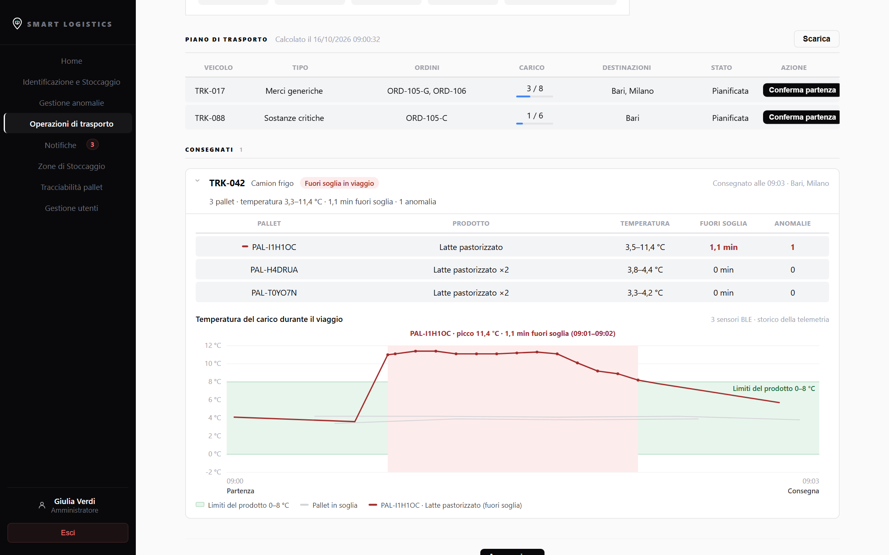

Identificazione
Tag RFID letti ai varchi e ai portali, sensori BLE a bordo del carico. L'EventManager fonde le due tecnologie e dà a ogni evento una confidenza alta, media o bassa.
Corso di Perfezionamento 2025/2026 · IDALab · Università del Salento
Identificazione dei pallet con RFID e BLE, gestione delle aree di stoccaggio, monitoraggio dei carichi e moduli di intelligenza artificiale per un magazzino logistico.
Il progetto
Il sistema segue ogni pallet in tutto il suo percorso nel magazzino. Il pallet arriva, viene identificato e stoccato nell'area compatibile con la merce. Durante la permanenza e il trasporto è monitorato, finché non viene spedito e consegnato. I dispositivi di campo (lettori RFID, sensori BLE dei carichi, sensori fissi di zona) sono simulati da un servizio dedicato, che pubblica sullo stesso broker MQTT usato dai dispositivi reali.

Tag RFID letti ai varchi e ai portali, sensori BLE a bordo del carico. L'EventManager fonde le due tecnologie e dà a ogni evento una confidenza alta, media o bassa.
Area refrigerata (0–8 °C), area sostanze critiche (gas e CO), magazzino generale. L'area di destinazione è decisa dalla categoria della merce.
Sensori fissi di zona e sensori BLE del carico. Le anomalie seguono il ciclo rilevata → presa in carico → risolta, con allarme a ritenuta.
Isolation Forest per valutare le anomalie, Prophet e SBA per prevedere la domanda, CP-SAT per assegnare i pallet ai camion.
Architettura
Microservizi containerizzati su una rete Docker comune. I servizi comunicano a eventi tramite il broker MQTT Mosquitto. I servizi di backend condividono un database PostgreSQL. Per ogni operazione il browser chiama un solo servizio, e gli altri reagiscono agli eventi.


| Livello | Servizi | Tecnologie |
|---|---|---|
| Edge (simulato) | simulation-service | Python, FastAPI, MQTT |
| Gateway | gateway-bridge-service, Mosquitto | Java 21, Spring Boot 3.4, Eclipse Paho |
| Backend | product-api, tracking-service, auth-service | Spring Boot, Spring Security (JWT), PostgreSQL 16 |
| AI | ai-anomaly-detection, demand-forecasting, transport-optimizer | scikit-learn, Prophet, OR-Tools |
| Frontend | frontend | Angular 19, nginx |
Componenti
Sensori fissi di zona, sensori BLE dei pallet e lettori RFID dei varchi, simulati e pubblicati su MQTT.
GatewayEventManager: fusione RFID/BLE, livelli di confidenza, coda di priorità in identificazione. Broker Mosquitto.
BackendPallet, aree e anomalie (product-api), storico e telemetria (tracking), utenti e JWT (auth).
AIValutazione delle anomalie, previsione della domanda, ottimizzazione dei trasporti.
FrontendDashboard Angular per tre ruoli: amministratore, responsabile di magazzino, responsabile della sicurezza.
DeploymentDocker Compose dell'intero sistema, smoke test e suite di validazione funzionale e prestazionale.
Funzionalità






Video
Risultati
Prove automatiche eseguite sul sistema in funzione (30 ripetizioni per i tempi dei movimenti dei pallet, con prove di tolleranza ai guasti) e valutazione dei modelli AI su dati sintetici etichettati.
Tutti gli obiettivi sono rispettati. Il tempo di accesso varia tra le esecuzioni: in quella riportata i casi più lenti restano a 414 ms, in esecuzioni precedenti hanno superato l'obiettivo di 500 ms. Le anomalie AI sono valutate su dati sintetici: il confronto con le sole soglie dipende da come sono costruite le anomalie di test.